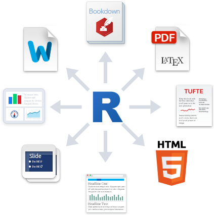
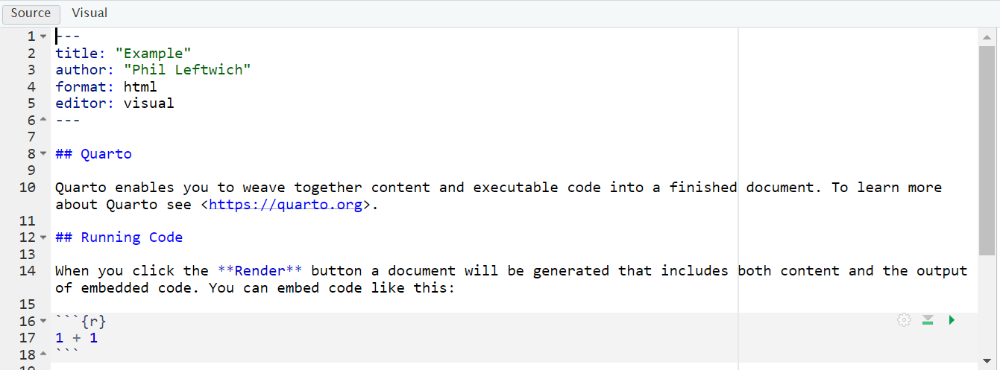

14 Intro to Quarto
Looking for tips and quick-reference? See: Quarto Tips & Reference
Quarto is a widely-used tool for creating automated, reproducible, and share-worthy outputs, such as reports. It can generate static or interactive outputs, in Word, pdf, html, Powerpoint slides, and many other formats.
A Quarto file combines R code (or other programming code) and text such that the script actually becomes your output document. You can create an entire formatted document, including narrative text (can be dynamic to change based on your data), tables, figures, bullets/numbers, bibliographies, etc.
Documents produced with Quarto, allow analyses to be included easily - and make the link between raw data, analysis & and a published report completely reproducible.
With Quarto we can make reproducible html, word, pdf, powerpoints or websites and dashboards1
How it works
Choose a title, author, as well as your default output format (HTML, PDF, or Word). These values can be changed later.
TipVisual vs Source
RStudio may open .qmd files in the Visual Editor by default. For this lesson, please switch to Source mode (use the Visual/Source toggle in the editor toolbar).
Click OK, and RStudio will create a Quarto document with some placeholder content.

This document contains several sections, each of which we will discuss below. First, though, let’s skip to the finish line by doing what’s called rendering our document. The Render button at the top of RStudio converts the Quarto document into whatever format we selected.
To make your document publish - hit the render button at the top of the doc
Quarto parts
Tip
Rstudio lets you view your Quarto document in visual (partially rendered) or source (all plain text) mode. The code and explanations below work best if you are viewing in source
As you can see, there are three basic components to any Quarto file:
YAML
Markdown text
R code chunks.
YAML Metadata
The YAML section is the very beginning of an Quarto document. The name YAML comes from the recursive acronym YAML ain’t markup language, whose meaning isn’t important for our purposes. Three dashes indicate its beginning and end, and the text inside of it contains metadata about the Quarto document. Here is my YAML:
---
title: "My Report"
format: html
---
As you can see, it provides the title, author, and output format. All elements of the YAML are given in key: value syntax, where each key is a label for a piece of metadata (for example, the title) followed by a value in quotes.
In the example above, because we clicked that our default output would be an html file, we can see that the YAML says output: html. However we can also change this to say pptx or docx or even pdf_document. (https://quarto.org/docs/output-formats/all-formats.html)
Code chunks
Quarto documents have a different structure from the R script files you might be familiar with (those with the .R extension). R script files treat all content as code unless you comment out a line by putting a pound sign (#) in front of it. In the following code, the first line is a comment while the second line is code.
```{r}
# Import our data
data <- read_csv("data.csv")
```
In Quarto, the situation is reversed. Everything after the YAML is treated as text unless we specify otherwise by creating what are known as code chunks. Each chunk is opened with a line that starts with three back-ticks, and curly brackets that contain parameters for the chunk { }. The chunk ends with three more back-ticks.
Quarto treats anything in the code chunk as R code when we knit. For example, this code chunk will produce a histogram in the final document.
Some notes about the contents of the curly brackets { }:
They start with ‘r’ to indicate that the language name within this chunk is R. It is possible to include other programming language chunks here such as SQL, Python or Bash.
After the r you can optionally write a chunk “name” – these are not necessary but can help you organise your work. Note that if you name your chunks, you should ALWAYS use unique names or else R will complain when you try to render.
After the language name and optional chunk name put a comma, then you can include other options too, written as tag=value, such as:
eval: false to not run the R code
echo: false to not print the chunk’s R source code in the output document
warning: false to not print warnings produced by the R code
message: false to not print any messages produced by the R code
include: true/false whether to include chunk outputs (e.g. plots) in the document
out-width and out-height = size of output in final document e.g. out-width = “75%”
fig-width and fig-height: relative size of figure
fig-align = “center” adjust how a figure is aligned across the page
fig-show=‘hold’ if your chunk prints multiple figures and you want them printed next to each other (pair with out-width = c(“33%”, “67%”).
Question. If we wanted to see the R code, but not its output we need to select what combo of code chunk options?
Default options for showing code, charts, and other elements in the rendered versions of the document. In Quarto, these options are set in the execute field of the YAML. For example, the following would provide the outputs of code, but hide the code itself, as well as all warnings and messages, from the rendered document:
---
title: "My Report"
format: html
execute:
echo: false
warning: false
message: false
---In cases where you’re using Quarto to generate a report for a non-R user, you likely want to follow this setup of hiding the code, messages, and warnings but show the output (which would include any visualizations you generate).
However, you can also override these global code chunk options on individual chunks. If I wanted my document to show both the plot itself and the code used to make it, I could set echo = TRUE for that code chunk only:
The option is set within the code chunk itself. The characters #| (known as a hash pipe) at the start of a line indicate that you are setting options.
Text
This is the narrative of your document, including the titles and headings. It is written in the “markdown” language, which is used across many different software.
Below are the core ways to write this text. See more extensive documentation available on Quarto “cheatsheets” at the RStudio website2.
Text emphasis
Surround your normal text with these characters to change how it appears in the output.
Underscores (_text_) or single asterisk (*text*) to italicise
Double asterisks (**text**) for bold text
Back-ticks (` text `) to display text as code
The actual appearance of the font can be set by using specific templates (specified in the YAML metadata).
Titles and headings
A hash symbol in a text portion of a Quarto script creates a heading. This is different than in a chunk of R code in the script, in which a hash symbol is a mechanism to comment/annotate/de-activate, as in a normal R script.
Different heading levels are established with different numbers of hash symbols at the start of a new line. One hash symbol is a title or primary heading. Two hash symbols are a second-level heading. Third- and fourth-level headings can be made with successively more hash symbols.
# First-level heading / Title
## Second level heading
### Third-level heading
Bullets and numbering
Use asterisks (*) to created a bullets list. Finish the previous sentence, enter two spaces, Enter/Return twice, and then start your bullets. Include a space between the asterisk and your bullet text. After each bullet enter two spaces and then Enter/Return. Sub-bullets work the same way but are indented. Numbers work the same way but instead of an asterisk, write 1), 2), etc. Below is how your Quarto script text might look.
Here are my bullets (there are two spaces after this colon):
* Bullet 1 (followed by two spaces and Enter/Return)
* Bullet 2 (followed by two spaces and Enter/Return)
* Sub-bullet 1 (followed by two spaces and Enter/Return)
* Sub-bullet 2 (followed by two spaces and Enter/Return) In-text code
You can also include minimal R code within back-ticks. Within the back-ticks, begin the code with “r” and a space, so RStudio knows to evaluate the code as R code. See the example below.
This book was printed on `r Sys.Date()`
When typed in-line within a section of what would otherwise be Markdown text, it knows to produce an r output instead:
This book was printed on 2025-09-25
Running code
You can run the code in an Quarto document in two ways. The first way is by rendering the entire document. The second way is to run code chunks manually (also known as interactively) by hitting the little green play button at the top-right of a code chunk. The down arrow next to the green play button will run all code until that point.
The one downside to running code interactively is that you can sometimes make mistakes that cause your Quarto document to fail to render. That is because, in order to render, a Quarto document must contain all the code it uses. If you are working interactively and, say, load data from a separate file, you will be unable to render your document. When working in Quarto, always keep all code within a single document.
The code must also always appear in the right order.
14.1 Self contained Reports
For a relatively simple report, you may elect to organize your Quarto script such that it is “self-contained” and does not involve any external scripts.
Set up your Rmd file to ‘read’ the penguins data file.
Everything you need to run the Quarto is imported or created within the Rmd file, including all the code chunks and package loading. This “self-contained” approach is appropriate when you do not need to do much data processing (e.g. it brings in a clean or semi-clean data file) and the rendering of the Quarto will not take too long.
In this scenario, one logical organization of the Quarto script might be:
Set global render options
Load packages
Import data
Process data
Produce outputs (tables, plots, etc.)
Save outputs, if applicable (.csv, .png, etc.)
14.1.1 TASK: Generate a self-contained report from data
Delete this content and replace it with your own. As an example, let’s create a report about penguins. Add the following content to a Quarto doc:
---
title: "Penguins Report"
author: "Phil"
output: html
execute:
echo: false
warning: false
message: false
---
```{r}
library(tidyverse)
```
```{r}
penguins_raw <- read_csv(here::here("files", "penguins_raw.csv"))
```
# Introduction
We are writing a report about the **Palmer Penguins**. These penguins are *really* amazing. There are three species:
- Adelie
- Gentoo
- Chinstrap
## Bill Length
We can make a histogram to see the distribution of bill lengths.
```{r}
penguins_raw |>
ggplot(aes(x = `Culmen Length (mm)`)) +
geom_histogram() +
theme_minimal()
```
```{r}
average_bill_length <- penguins_raw |>
summarize(avg_bill_length = mean(`Culmen Length (mm)`,
na.rm = TRUE)) |>
pull(avg_bill_length)
```
The chart shows the distribution of bill lengths. The average bill length is `r average_bill_length`.Common render issues
Any of these issues will cause the qmd document to fail to render in its entirety. A failed render is usually an easy fix, but needs you to READ the error message, and do a little detective work.
Duplication
Not the right order
plot(my_table)
my_table <- table(mtcars$cyl)Forgotten trails
: Missing “,”, or “(”, “}”, or “’”
Path not taken
The qmd document is in a different location the .Rproj file causing issues with relative filepaths
Spolling
Incorrectly labelled chunk options
Incorrectly evaluated R code